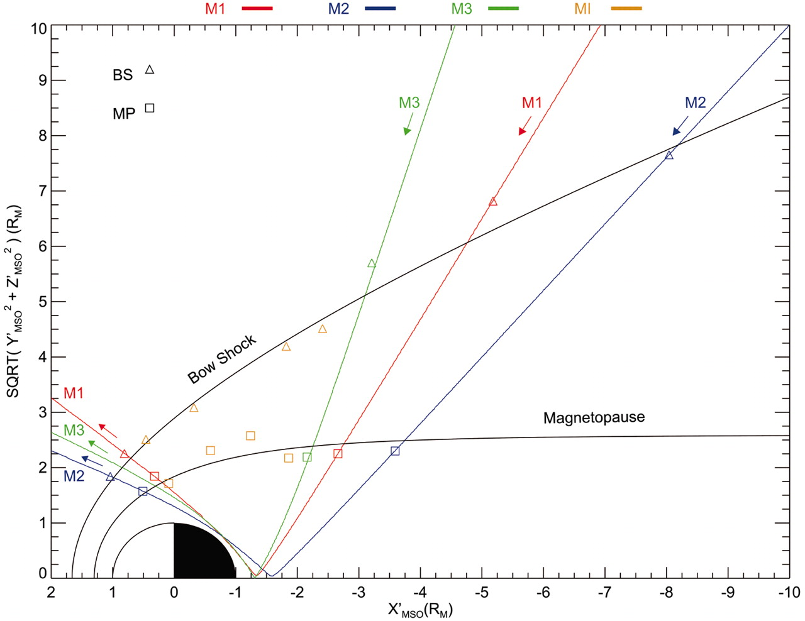

MESSENGER Observations of Extreme Loading and Unloading of Mercury’s Magnetic Tail
Introduction
Quick facts
Messenger (Mercury Surface, Space Environment, Geochemistry, and Ranging)
A NASA robotic space probe that orbited the planet Mercury between 2011 and 2015
Magnetometer (MAG) and Energetic Particle and Plasma Spectrometer (EPPS)
Mercury
The smallest and innermost planet (\(0.39 \text{AU}\)) in the Solar System
\(R_{\text{Mercury}} = 2439.7 \text{km} = 0.38 R_{\text{Earth}}\)
Dungey cycle
Circulation of plasma, magnetic flux, and energy from the dayside X-line at the magnetopause
to the nightside X-line in the crosstail current layer and,
and later, back to the dayside magnetosphere
Ranges from ~1 month at Jupiter to ~1 week at Saturn and ~1 hour at Earth
Mercury’s magnetosphere under southward IMF conditions
A cross-magnetosphere electric potential of ~30 kV or a mean dawn-to- dusk electric field of ~2 mV/m. This electric field implies a Dungey cycle time (i.e., time to drift in response to the dawn-to-dusk magnetospheric electric field from local noon to midnight in the polar cap, or from the northern boundary of the tail down to the cross-tail current sheet) at Mercury of ~2 min.
\[ \phi_c = R_{MP} × (v × B_N) \approx 30 kV \]
The relevant scaleis the convectiontime \(T_c\), defined a the time to cycle the magnetic flux in the tail \(\Phi_T\) under the action of the electric potential \(\phi_c\) across the magnetosphere: \(T_c = \Phi_T/\phi_c\)
Overview of magnetospheric measurements

The magnitude of the magnetic field in Mercury’s tail increased and then decreased by factors of ~2 to 3.5.
Neglecting changes in tail diameter, magnetic energy density increased by factors of 10. (By comparison, Earth’s one is less than a factor of ~1.6)
Events 2 to 4 corresponded to higher \(|B_Y/B_X|\) than the intervening periods, indicating increased flaring of the magnetic tail.
Estimating the magnetic flux
\[ \Phi = \int_{\text{tail}} B \cdot dA = 0.5 \pi B_{\text{tail}}R_{\text{tail}}^2 \]
the radius of the tail for event 3 may have reached 3.5 \(R_M\)
- the solar wind conditions predicted from a magnetohydrodynamic model of the inner heliosphere driven by solar magnetic field observations
\[ \Phi = \approx 9.5 \text{MWb} \]
Tail-loading event 2
Fig. 3 Magnetometer observations of tail-loading event 2 during MESSENGER’s third flyby.
six intervals of several seconds each when the total magnetic field weakened, indicating entry into a region with high plasma thermal pressure and low magnetic field pressure.
These minima in field magnitude coincide with either rapid northward-then-southward or just southward variations in BZ, followed by a slower recovery back to BZ ≈ 0
Near-Mercury neutral line (NMNL)
- The NMNL was observed near XMSO = –2.6 RM during MESSENGER’s second flyby (5), but it was closer to the planet, near XMSO ≈ –1.6 RM, for this flyby. The third flyby results therefore suggest that the NMNL develops much closer to the planet when the magnetic tail is heavily loaded with magnetic flux, such as during events 2 and 3.
Schematic view
The total magnetic flux emanating from Mercury’s surface can be calculated for a simple centered dipole:
\[ \Phi_M = 2 \pi B_{\text{eq}}R_{\text{M}}^2 \approx 9.5 \text{MWb} \]
\[ \Phi / \Phi_M \approx 1 \]
By comparision, Earth’s is only ~10 to 12%.
- Mercury’s dayside magneto-sphere may be fully depleted by reconnection
- The entire dayside surface would map to open magnetic field lines and be exposed to the shocked solar wind of the magnetosheath.